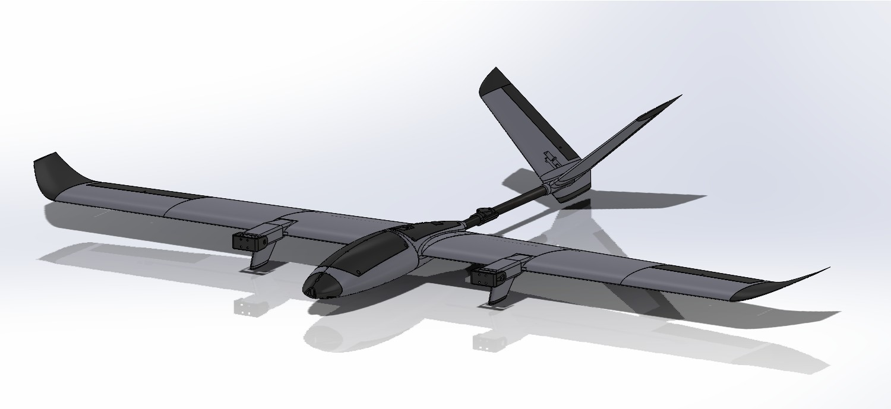
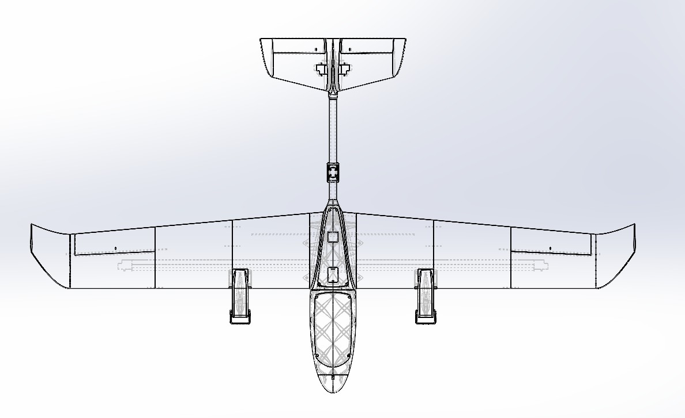
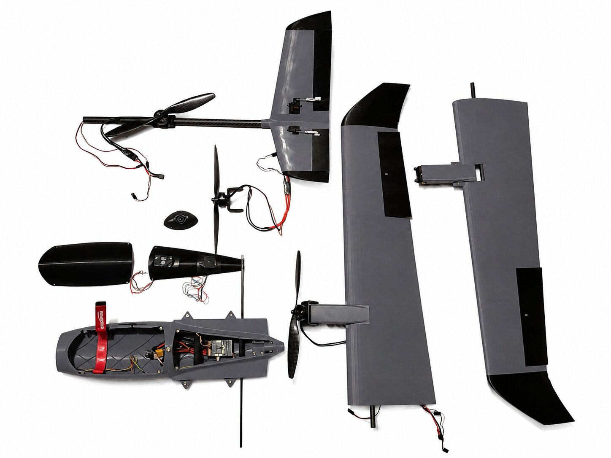
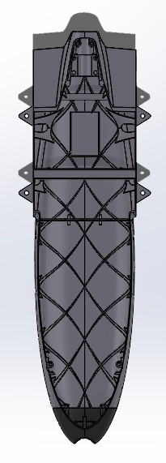
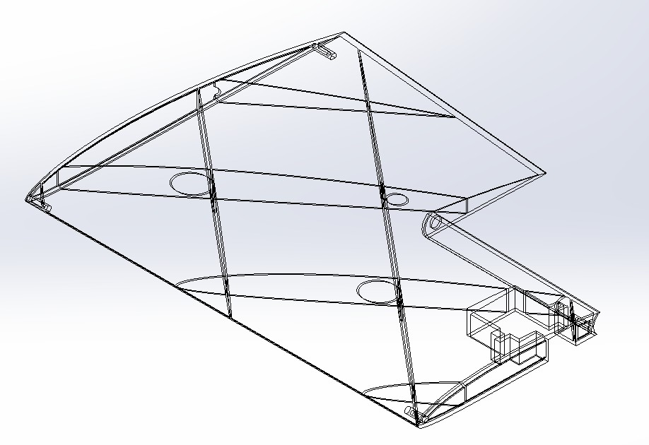
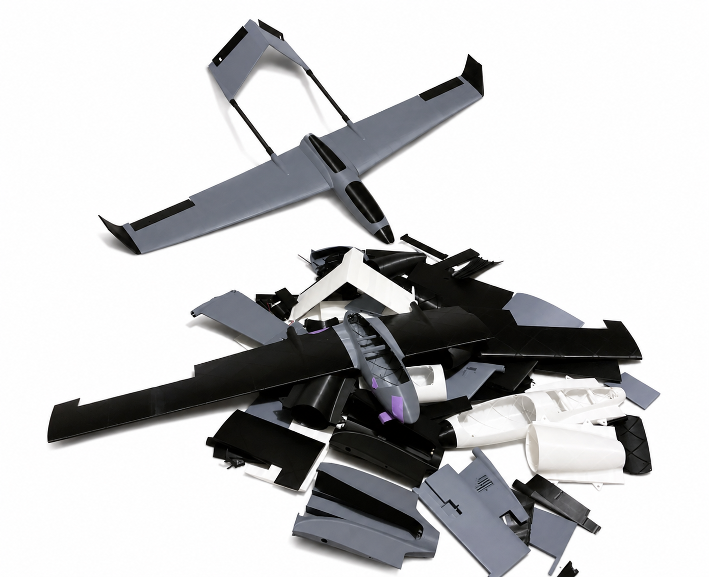
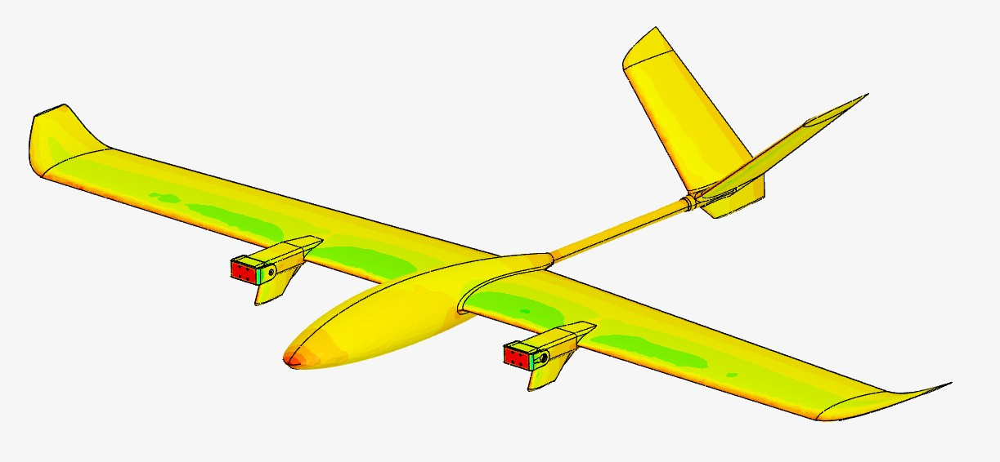
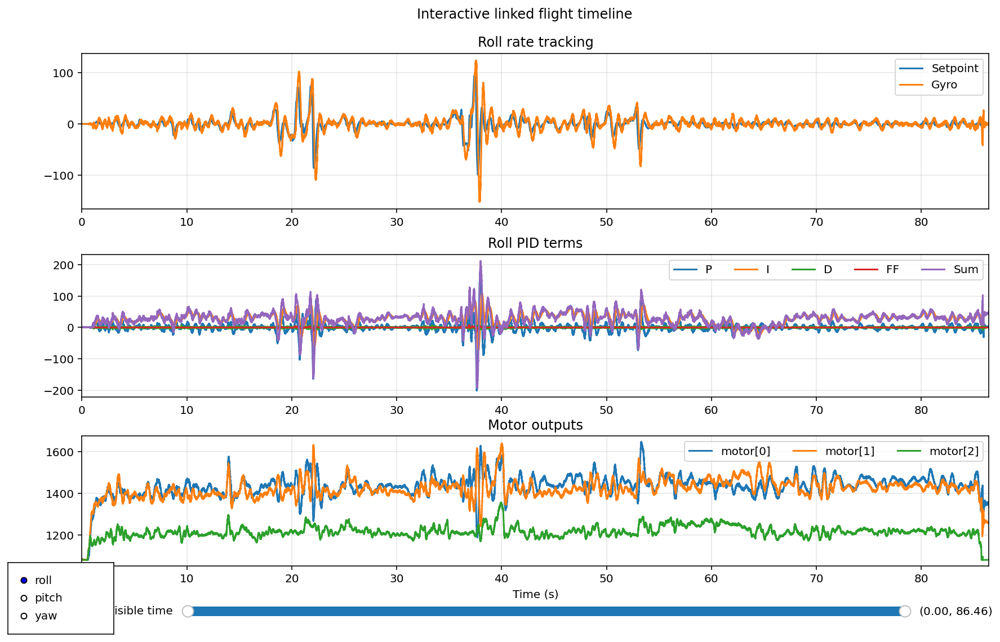
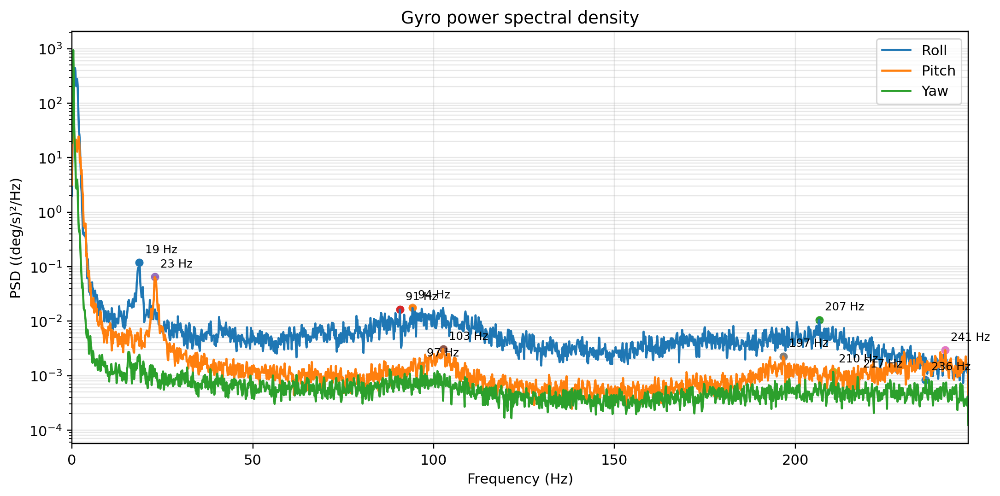
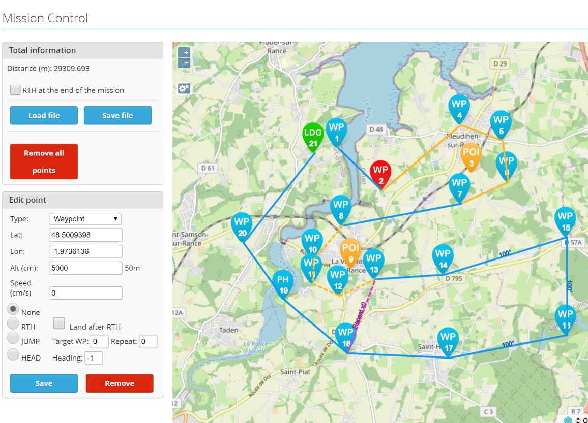

Designing, manufacturing and flight testing a 3D-printed transition-capable UAV, with the long-term goal of creating an efficient and fully autonomous aircraft platform.
Watch Flight TestThis project began as an exploration into one of the most challenging problems in small unmanned aircraft design: combining vertical takeoff and landing capability with the efficiency and range of fixed-wing flight.
The aircraft uses a tricopter-style configuration consisting of two front tilt motors and a fixed rear lift motor. During vertical flight, the three motors support the aircraft and provide active attitude control. During transition, the front motors rotate forward while airspeed and aerodynamic lift gradually increase. Once transitioned, the aircraft operates as a conventional fixed-wing UAV.
The project has involved the complete design and development process, including SolidWorks modelling, aerodynamic analysis, structural design, additive manufacturing, electronics integration, INAV flight controller configuration, control mixing, vertical flight testing, transition development and fixed-wing flight testing.
The long-term objective is to develop the aircraft into a capable autonomous platform. Vertical takeoff removes the requirement for a runway or launch system, while fixed-wing operation provides the efficiency needed for useful range and endurance.
A major focus throughout the project has been iteration. Several design decisions that initially appeared successful in CAD or during static testing exposed weaknesses during real flight testing. Each issue required investigation, redesign and further validation.
This video shows an early vertical flight test of the aircraft. Vertical testing was used to validate the propulsion system, control authority, centre of gravity, motor layout and flight controller tuning before attempting transition flight.
Testing the aircraft in stages allowed problems to be isolated more easily. Stable vertical flight was developed first, followed by fixed-wing testing, before combining both operating modes during transition development.
This staged approach is also important for future autonomous operation. Each flight mode must be independently reliable before it can be safely integrated into a complete automated mission.
The aircraft was designed entirely in SolidWorks. This stage was one of the most enjoyable aspects of the project, but also one of the most technically challenging.
Rather than simply creating a model of an aircraft, the objective was to balance several competing requirements simultaneously. Throughout development, I was continually optimising the airframe for aerodynamic efficiency, structural strength, stiffness, weight, manufacturability, maintainability and ease of assembly.
The final airframe is the result of many iterations, with the geometry continually refined as flight testing, manufacturing experience and new requirements influenced each successive revision.


SolidWorks models used to develop the aerodynamic geometry, structural layout and internal component packaging.
A major design requirement from the beginning of the project was complete modularity.
Experimental aircraft inevitably require repairs and redesigns during development, so every major assembly was designed to be removable without requiring the entire aircraft to be rebuilt. This greatly reduced repair time following testing and made it much easier to iterate on individual components.
The following assemblies can all be independently removed and replaced:
Electrical integration followed the same philosophy. All removable assemblies use plug-and-socket connectors, allowing components to be disconnected without cutting or resoldering wiring while also making transport significantly easier.

The modular airframe allows major assemblies to be removed independently for transport, maintenance and rapid design iteration.
One of the largest engineering challenges throughout the project was developing an airframe that was sufficiently strong and stiff for flight while remaining lightweight enough to achieve practical performance.
Although FDM printing provides enormous design freedom, standard thermoplastics generally offer a lower stiffness-to-weight ratio than traditional composite construction. Without access to composite manufacturing, the objective became achieving the highest possible structural efficiency using conventional PLA through careful engineering design.
Every component was designed with print orientation, expected loading, manufacturability and weight in mind. Rather than relying on generic slicer infill, major structural components incorporated custom-designed internal reinforcement to place material only where it was required.
The fuselage is built around a continuous helical rib structure running along the length of the aircraft. Instead of using conventional slicer infill, the internal reinforcement was designed specifically for the expected loading conditions, increasing both bending stiffness and torsional rigidity while minimising mass.
As the fuselage exceeded the printer's build volume, it was divided into two main sections. To maintain structural integrity across the joint, 1.2 mm steel locating pins were incorporated to improve alignment and transfer bending loads between the two halves.

Custom-designed helical reinforcement increases bending stiffness and torsional rigidity while keeping the fuselage lightweight.
Each wing is reinforced using a single 10 × 8 × 500 mm carbon-fibre spar, which carries the majority of the bending loads while allowing the printed structure to remain lightweight.
The wing was designed as multiple printed sections to fit within the printer's build volume. Following research into lightweight wing structures and truss layouts, the internal geometry was developed using a series of diagonal reinforcing ribs that support the aerodynamic shell and efficiently transfer loads into the spar.
Additional 1.2 mm steel locating pins align each printed section during assembly, improving joint accuracy and preventing rotation between adjoining sections.

Internal wing reinforcement transfers aerodynamic loads into the carbon-fibre spar while maintaining a lightweight structure.
Reaching the final airframe required far more than a single design. As the project progressed, almost every structural component was redesigned multiple times as new challenges emerged during manufacturing, assembly and flight testing.
Wall thicknesses, internal rib geometry, print orientation, joining methods and reinforcement strategies were continually refined to improve strength, stiffness, manufacturability and ease of assembly while reducing unnecessary weight.
Many of the discarded components represent solutions that worked well in one area but introduced new problems elsewhere. Although only the final aircraft is shown throughout this portfolio, it is the result of countless design decisions and lessons learned through repeated prototyping and testing.

A collection of prototype components produced throughout development. Each represents a design iteration, manufacturing experiment or lesson that contributed to the final aircraft.
Aerodynamic performance was an important design driver because it directly affects stability, stall speed, cruise efficiency and endurance.
CFD was used as a design aid to understand the general flow behaviour and pressure distribution across the aircraft. The intention was not to predict every operating condition perfectly, but to identify broad aerodynamic trends and compare design decisions.
The analysis helped visualise flow around the fuselage, wings and tail, and supported decisions involving wing geometry, stability and surface transitions.

CFD pressure visualisation used to support aerodynamic design and identify broad flow behaviour around the aircraft.
One of the most important aerodynamic lessons came from physical flight testing rather than simulation.
An early version of the aircraft experienced a low-speed tip stall. The aircraft rapidly lost roll stability when the outer section of the wing stalled, causing it to roll off and crash.
Following the crash, I modified the wing to incorporate washout. This reduced the local angle of attack toward the wing tips, encouraging the wing root to stall first and helping the ailerons retain effectiveness for longer.
This experience demonstrated the importance of validating aerodynamic assumptions through testing and showed how a relatively small geometric change could significantly improve low-speed handling.
Throughout development, every test flight was recorded using the aircraft's onboard blackbox logger. Rather than relying solely on subjective observations during flight, these logs provided detailed telemetry that could be analysed afterwards to better understand the aircraft's behaviour and guide future design decisions.
To automate this process, I developed a suite of Python tools that parse the recorded flight data and generate interactive visualisations of the aircraft's performance. This made it possible to quickly inspect control response, vibration characteristics and actuator behaviour without manually searching through raw log files.
The analysis software synchronises multiple telemetry streams into a single interactive interface, allowing individual events to be examined in detail. Control setpoints, measured gyro response, PID controller terms and motor outputs can all be viewed simultaneously while zooming through the flight timeline.
Linking these datasets together makes it much easier to identify the cause of unusual aircraft behaviour and evaluate the effectiveness of controller tuning following each test flight.

Python-based flight analysis tool combining blackbox telemetry into an interactive timeline for controller tuning and flight evaluation.
The software also performs frequency-domain analysis of the onboard gyro data by calculating the power spectral density of each axis. This allows vibration frequencies to be identified and linked to specific components such as motors, propellers or structural resonances.
Automatically detecting significant vibration peaks makes it easier to optimise filtering, improve mechanical design and verify that design changes reduce unwanted vibration between successive flight tests.

Power spectral density of the onboard gyro data highlighting dominant vibration frequencies recorded during flight.
While achieving stable VTOL flight has been the primary focus of this project, the long-term objective is to develop a fully autonomous aircraft capable of completing useful real-world missions.
Combining vertical take-off and landing with efficient fixed-wing flight allows the aircraft to operate from locations where conventional runways are unavailable while still providing the endurance and range of a traditional UAV.
The aircraft uses a Corewing F405 flight controller running INAV, supporting GPS navigation, waypoint missions, return-to-home and fully autonomous flight modes. Position is provided by a Foxeer M10Q GPS and IST8310 compass, while a MATEK ASPD-4525 digital pitot tube provides accurate airspeed measurements during forward flight.
Rather than enabling autonomous flight immediately, the project is being developed incrementally. Stable hover, reliable fixed-wing flight and repeatable transitions must all be achieved before autonomous waypoint missions can be introduced safely.

Example waypoint mission created using INAV Mission Control.
Stable hover → Forward flight → Reliable transitions → GPS-assisted flight → Autonomous waypoint missions.
The electronics system was developed around a Corewing F405 flight controller running INAV. The flight controller integrates the propulsion system, tilt servos, control surfaces, navigation sensors, receiver and video system.
The main engineering challenge was not simply selecting individual components, but packaging and connecting them as a reliable aircraft system while preserving access for maintenance, debugging and future modification.
The power distribution and wiring were designed to complement the modular aircraft structure. Removable assemblies use connectors so that wings, motor pods and other sections can be removed without cutting or resoldering wires.
The most valuable parts of this project were often the problems that appeared during physical testing. These failures exposed weaknesses that were not always visible in CAD, simulation or static testing.
An early version of the aircraft crashed after entering a low-speed tip stall. The outer wing stalled before the root, causing a rapid loss of roll stability.
After reviewing the behaviour, I redesigned the wing to incorporate washout. Reducing the angle of attack toward the wing tips improved the stall progression and helped preserve aileron effectiveness at lower airspeeds.
This was one of the clearest examples of real flight testing directly driving an aerodynamic design change.
The original motor mounting plates were printed from PLA. During sustained VTOL testing, heat produced by the motors softened the surrounding plastic.
This caused the mounting plates to deform slightly and allowed the motor mounting screws to begin pulling through the softened material. Although the parts appeared adequate during static testing, the combination of heat, vibration and sustained motor loading exposed a weakness in the design.
The mounting arrangement was subsequently redesigned to distribute the fastener loads more effectively and improve resistance to thermal deformation.
Increasing the strength of a printed component is relatively simple if weight is ignored. However, every additional gram increases wing loading, reduces hover thrust margin and lowers endurance.
Structural problems therefore could not simply be solved by adding more walls or increasing infill. Material had to be placed only where it contributed meaningfully to load transfer, stiffness or local reinforcement.
The custom internal structures, carbon-fibre members, steel locating pins and carefully selected print orientations were all developed in response to this challenge.
Vertical flight was developed first because it allowed the propulsion layout, centre of gravity and control system to be validated before attempting transition.
Unlike fixed-wing flight, hover provides very little passive aerodynamic stability. The aircraft relies on active control and rapid motor response to maintain attitude.
Testing focused on:
This stage also exposed the PLA motor-mount deformation issue and provided valuable information about the loads generated during sustained hover.
Transition is the most technically demanding phase of the project. During this process, the aircraft must move from rotor-borne flight to wing-borne flight without losing stability or control authority.
As the front motors rotate forward, their vertical thrust component decreases. At the same time, airspeed increases and the wing begins to generate more lift. The control surfaces also become progressively more effective as airflow builds over them.
Several factors must therefore be coordinated simultaneously:
The aircraft uses different control behaviour for its vertical and fixed-wing modes. Developing the transition required careful mixer configuration and staged testing to ensure the control system changed smoothly as the aircraft configuration changed.
Rather than trying to complete the entire transition immediately, the problem was broken into smaller steps. Vertical flight and fixed-wing flight were first validated independently. Motor tilt and control mixing could then be introduced progressively.
Reliable transition is also one of the key requirements for future autonomous missions. An autonomous aircraft must be capable of performing takeoff, transition, cruise, return, reverse transition and landing without pilot intervention.
Once transitioned, the aircraft behaves more like a conventional fixed-wing UAV. The wing produces the majority of the lift while the front motors provide forward thrust.
This operating mode provides the main efficiency advantage over a multicopter because the propulsion system no longer needs to directly support the full aircraft weight.
Fixed-wing testing focused on:
The earlier tip-stall crash showed that successful forward flight was not simply a matter of producing enough lift. The aircraft also needed predictable handling and sufficient control authority throughout its operating envelope.
Efficient and stable forward flight is essential to the autonomous goal of the project. Once the aircraft can reliably cruise under flight controller control, it can begin completing longer waypoint missions while using far less energy than would be required to remain in hover.
The most important lesson from this project has been that aircraft development is fundamentally iterative.
CAD, CFD and engineering calculations provide essential guidance, but they do not replace physical testing. Real flight testing exposed issues with stall behaviour, thermal deformation, structural joints, print orientation, control mixing and systems integration that were not always obvious in the digital model.
The project has developed my experience across aircraft design, SolidWorks, surface modelling, additive manufacturing, aerodynamics, embedded systems, flight control, wiring, system integration and practical flight testing.
It has also shown me that autonomy depends on reliable physical systems. Waypoint navigation and automated flight modes are only useful once the aircraft structure, propulsion, sensors and control behaviour have been validated through real testing.
More importantly, the project taught me to treat failures as engineering information. The tip-stall crash, deformed motor mounts and large number of discarded printed parts were not simply setbacks. Each one identified a weakness, informed a redesign and resulted in a more capable aircraft.